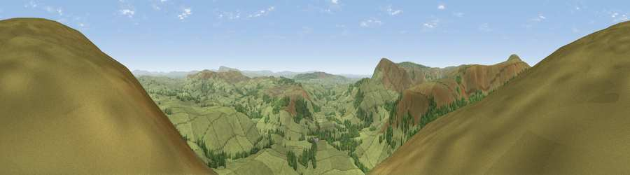

Viewpoint near Dunsop Bridge
#7898 in England · top 18% of its area beats it · near Dunsop BridgeWhere it is
The exact computed spot (SD 66275 52125). Click the marker for map links.
The view, rendered

A 360° render of this exact spot computed from the terrain model, tree cover and land cover — summer colours, afternoon light, calibrated against photographs of famous viewpoints. Real trees, hedges and buildings will differ in detail.
The panorama
Grey silhouette: terrain skyline in each direction (720 bearings, Earth curvature and refraction included). Dashed green: skyline with trees (+15 m) and buildings (+8 m) as obstacles. Blue strip: how far the ground is visible on each bearing.
Where the view opens
Wedge length = distance to the farthest visible ground on that bearing (vegetation-aware). Rings at 10, 25 and 50 km.
What fills the view
90% grassland · 10% woodland
Angular shares of the visible panorama (visual magnitude), not map area. Landscape diversity 0.15 (0–1 Shannon).
Key numbers
More beautiful places nearby
The staircase of upgrades: each row has a higher view potential than everything closer. Driving times are estimates from straight-line distance, calibrated against real road routing — check an actual route before setting out.
| Place | Direction | Drive | Score |
|---|---|---|---|
| Viewpoint near Slaidburn | NE · 2 km | ~6 min | 69.0 |
| Whins Brow | WNW · 3 km | ~7 min | 76.3 |
| Paddy's Pole | SW · 9 km | ~18 min | 77.3 |
| Parlick | SW · 10 km | ~19 min | 77.5 |
| Viewpoint near Quernmore | WNW · 14 km | ~25 min | 78.0 |
| Viewpoint near Scorton | WSW · 15 km | ~26 min | 79.9 |
| Warton Crag | NW · 27 km | ~43 min | 83.2 |
| Viewpoint near Grange-over-Sands | NW · 37 km | ~56 min | 83.4 |
53.96410, -2.51553 · source: screening · position refined by local search. Computed location — check access rights before visiting.